故宫之旅，相见冰雪
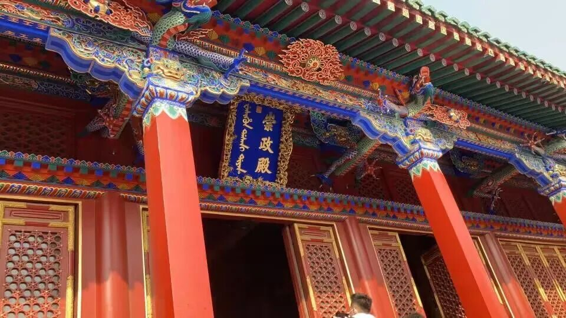

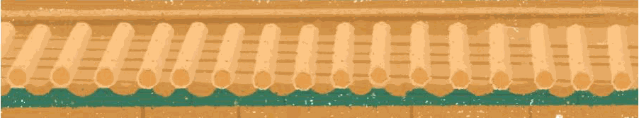
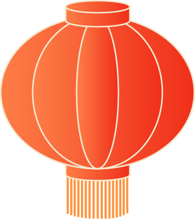
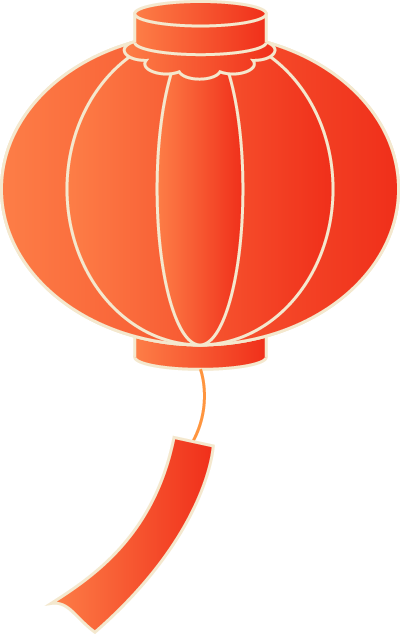
行者无疆 踏冰逐梦
Day16&17
煌煌紫气今犹在
沈阳路上，盛京宫阙。2月16日，行者们参观了沈阳故宫。在景区工作人员的亲情讲解之下我们深入了解故宫厚重的历史。
在建筑艺术上承袭了中国古代建筑传统，集汉、满、蒙族建筑艺术为一体的沈阳故宫令行者们叹为观止；通过导游绘声绘色的讲解，历史的画幅在行者们眼前徐徐展开；“天底下没有不透风的墙”“门当户对”“不能踩门槛”这些为人熟知的习语也在此处寻得了印证。
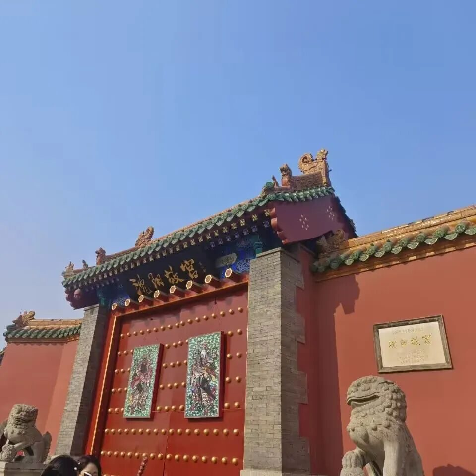
这座采撷了长安，洛阳，开封，金陵的汉家宫阙之大成的清朝皇家宫殿，满蒙汉建筑风格交杂，琉璃瓦下大政殿，青砖亭内十王侯。蕴含着深邃的故事，活跃了世代的源远传承。
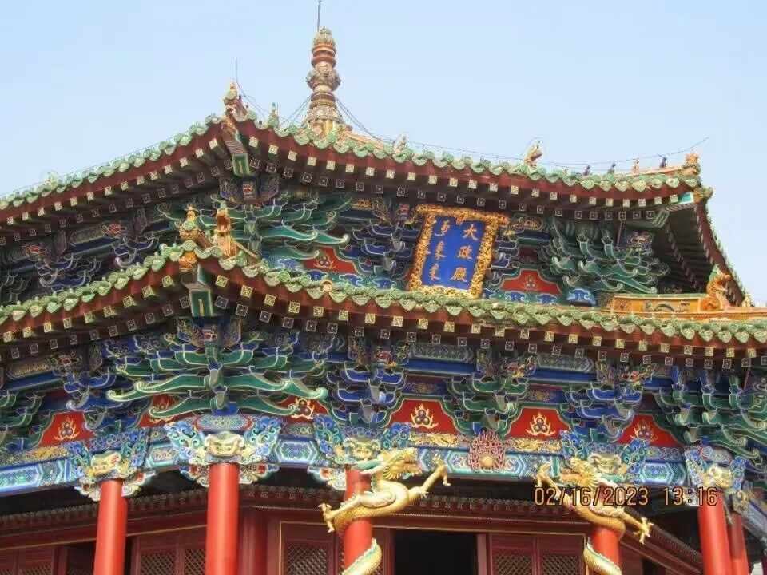
冰雪之梦盛相约
为更深刻了解冰雪文化的现状，团队就冰雪文化了解途径、北京冬奥会的相关影响、冰雪文化体验等方面设计了调研问卷，行者们在故宫和中街上积极地展开了关于冰雪文化的街访与问卷调查，为调研提供数据支撑。为更深刻了解冰雪文化的现状，团队就冰雪文化了解途径、北京冬奥会的相关影响、冰雪文化体验等方面设计了调研问卷，行者们在故宫和中街上积极地展开了关于冰雪文化的街访与问卷调查，为调研提供数据支撑。
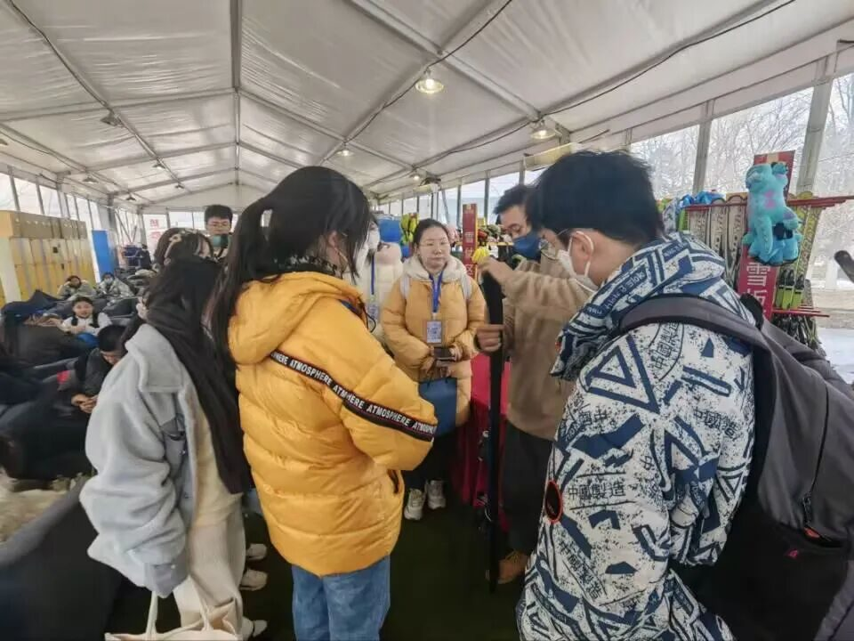
行者们在实践的过程中了解到冰雪娱乐项目丰富了全民健身的内容，冰雪运动项目感召着广大青少年的参与，冰雪艺术透示着这座城市的文化内涵，冰雪文化传递着这座城市的底蕴。
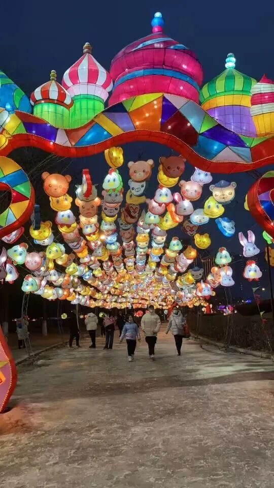
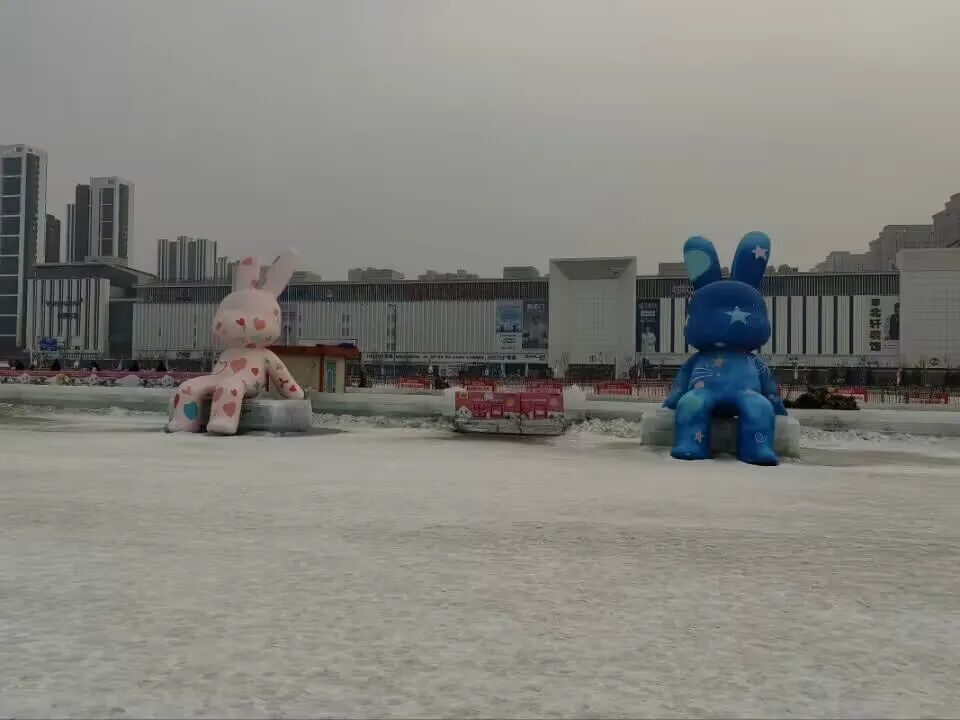
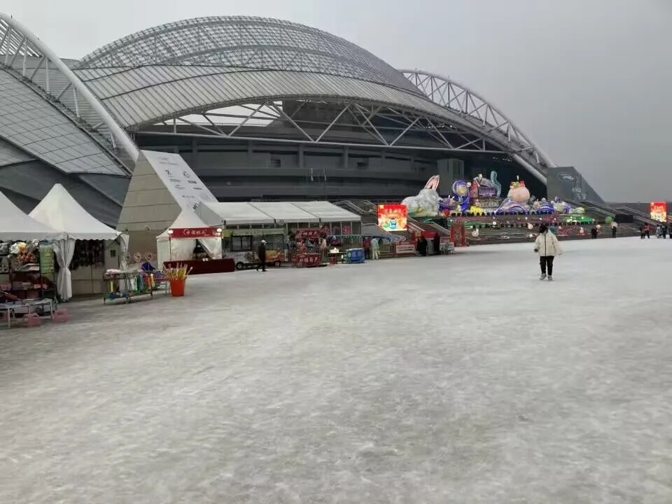
心随意动，不负青春。在这两天里行者们博古通今，挖掘沈阳深厚的历史底蕴的同时也体验了现代鲜活纯净、无畏坚毅的冰雪文化。上演一场自然与人文的交响。
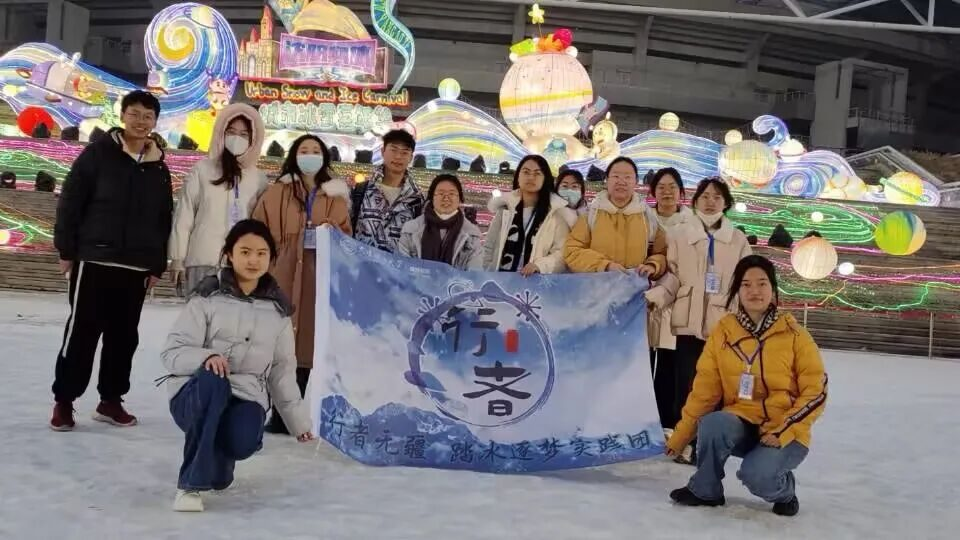
来源 | 行者无疆实践团
图片 | 行者无疆实践团
图片 | 部分来源于网络
文字 | 张霖茜
排版 | 周奕彤
审核 | 周奕彤 崔雨琪